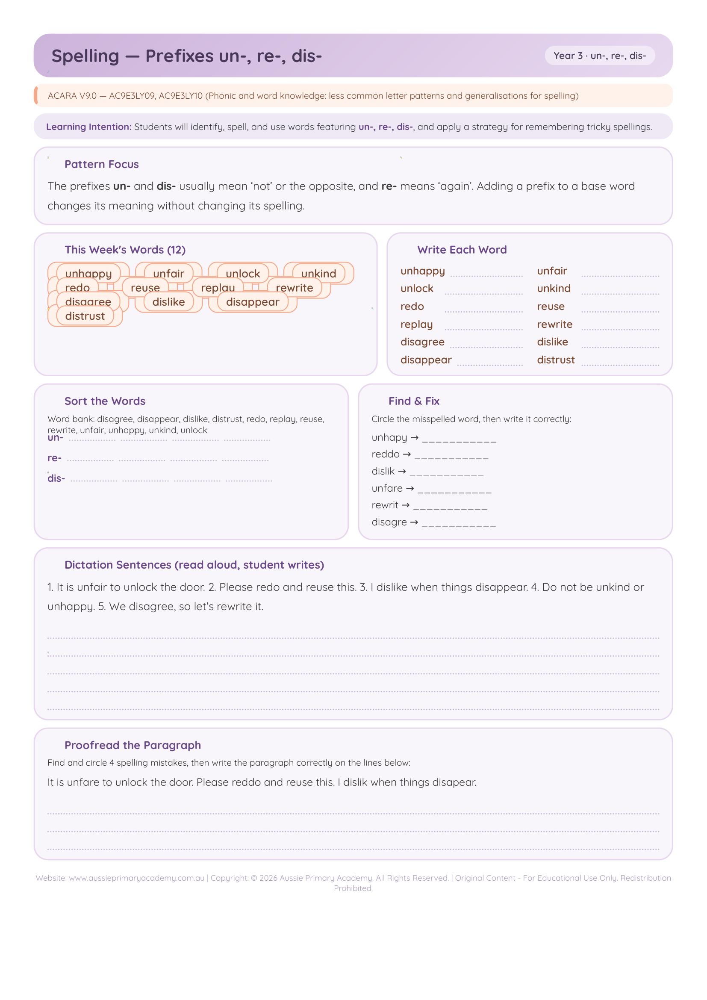

Year 3 · English · Spelling · Free Printable
Prefixes: un-, re-, dis-
Practise adding the prefixes un-, re- and dis- to base words to change meaning.
Worksheet Preview

Learning Intention
Students will add the prefixes un-, re- and dis- to base words and understand how they change meaning.
Australian Curriculum
Supports Year 3 English literacy and spelling learning (AC9E3LY10).
Teacher Notes
Discuss meaning of each prefix (not, again, opposite). Build words then use them in sentences.
Skills Practised
- Prefixes
- Morphology
- Word building
- Vocabulary